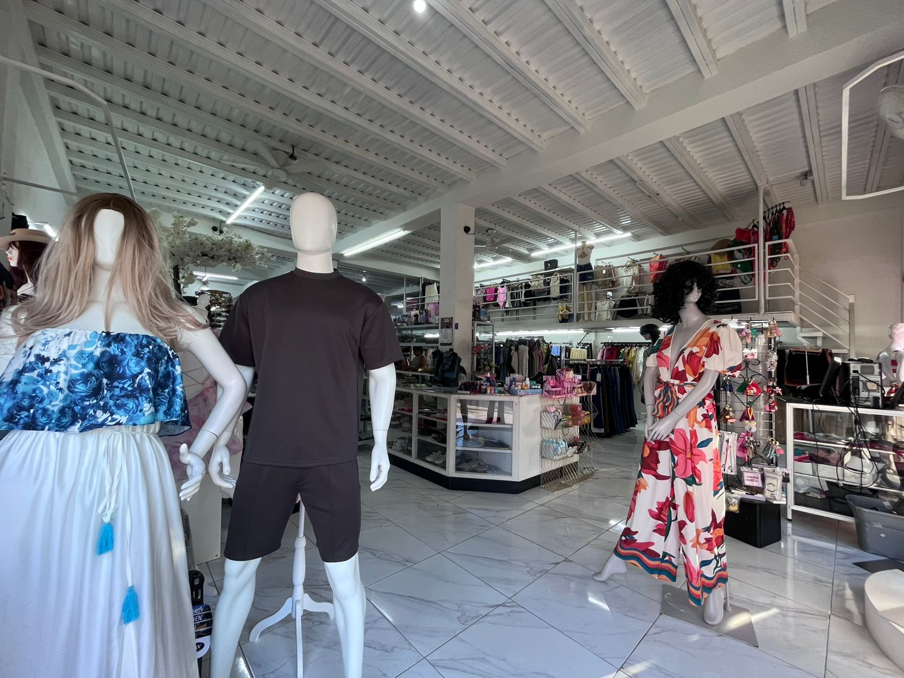
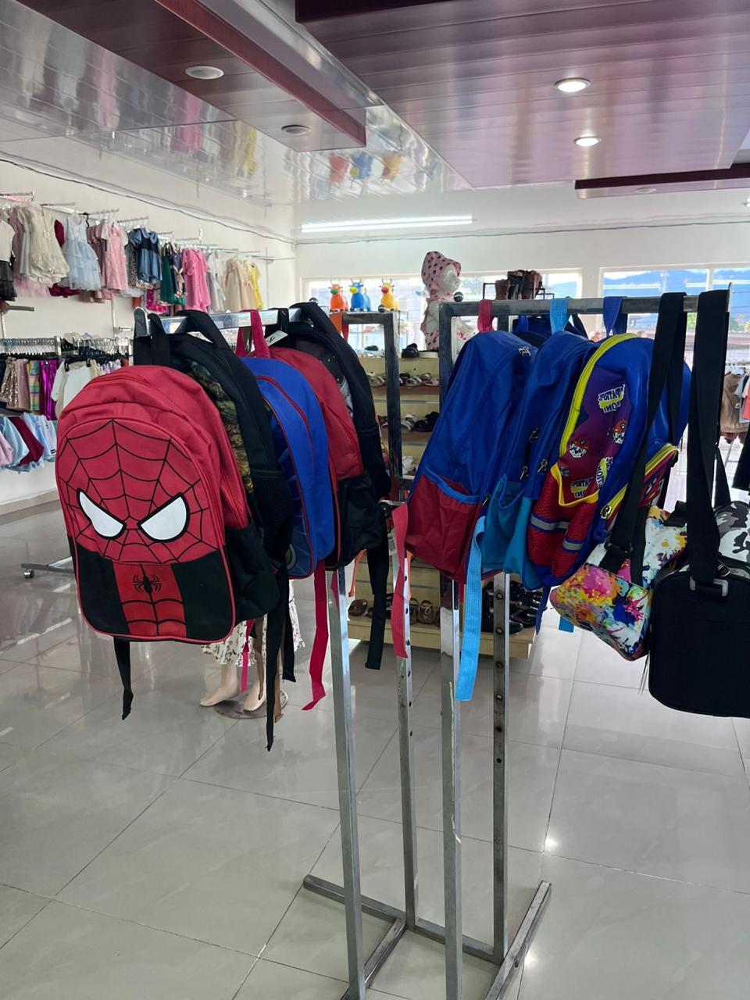
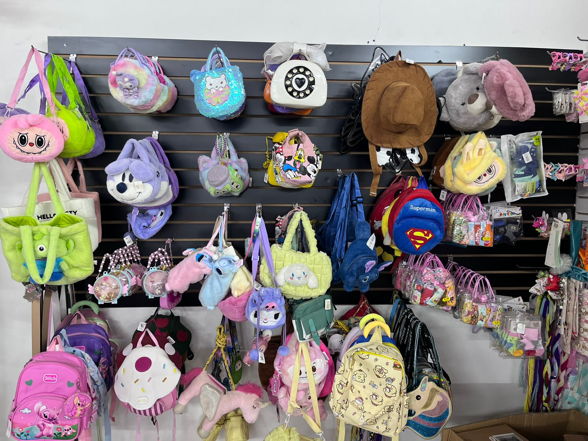
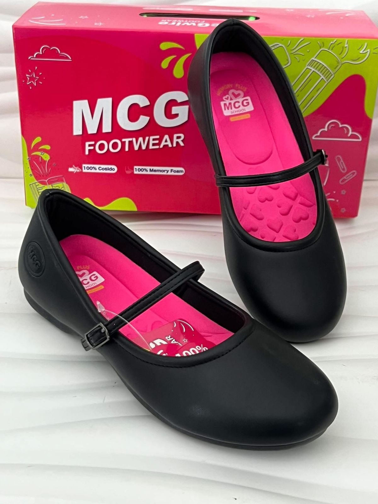

Nuestros Programas y Actividades
Descubre los beneficios exclusivos, eventos de temporada y programas de fidelidad que Variedades Sumaya tiene para ti.

Cliente Estrella
Acumula puntos por cada compra y canjéalos por descuentos exclusivos en tu próximo par de zapatos o prenda favorita.

Temporada Escolar
Actividades especiales y descuentos en calzado escolar y mochilas para que los más pequeños inicien el año con todo.

Pasos Solidarios
Programa de recolección de calzado en buen estado para donar a comunidades necesitadas en Tegucigalpa Sur.

Taller de Calce Infantil
Actividades mensuales donde expertos ayudan a padres a elegir el tamaño correcto de zapato para el crecimiento sano de sus hijos.